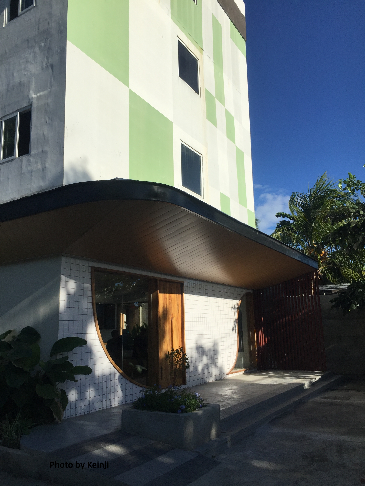

NANDA CAFÉ
Nanda Cafe is located in Cordova, a charming town known for its scenic views and friendly locals. The cafe perfectly embodies the warm and inviting spirit of the community.

The menu at Nanda Cafe offered a variety of dishes, ranging from breakfast options to hearty lunches and delicious desserts. I decided to start my day with their famous breakfast platter, which included fluffy pancakes, crispy bacon, scrambled eggs, and a side of fresh fruits. The portion was generous, and each bite was bursting with flavor.
The interior was beautifully decorated with a mix of modern and rustic elements, creating a welcoming and comfortable ambiance. The soft lighting and soothing background music added to the overall charm of the place. Nanda Cafe is located in Cordova, specifically in Purok 4, Sitio Camino, Gabi. It is a hidden gem, tucked away in a vibrant and cozy setting. The cafe offers a variety of delicious food and beverages to satisfy your cravings.
Nanda Cafe in Cordova is a hidden place to get your caffeine fix and satisfy your cravings.
The vibrant ambiance, friendly staff, and delicious food make it a must.